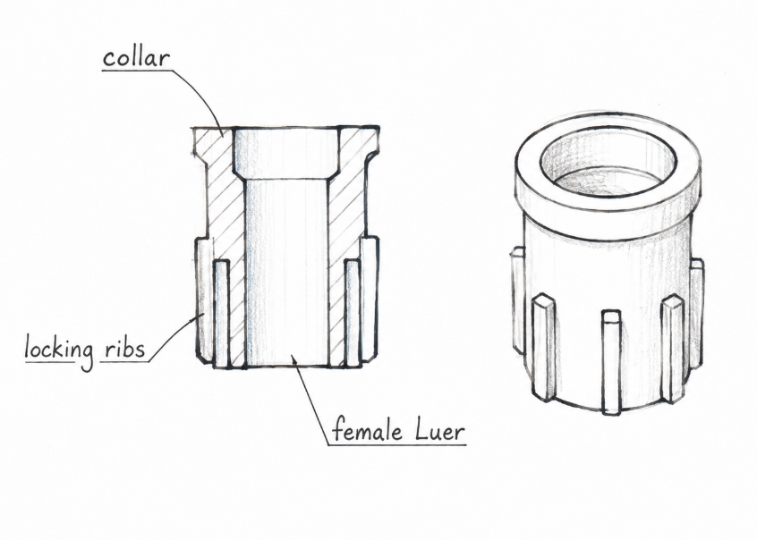
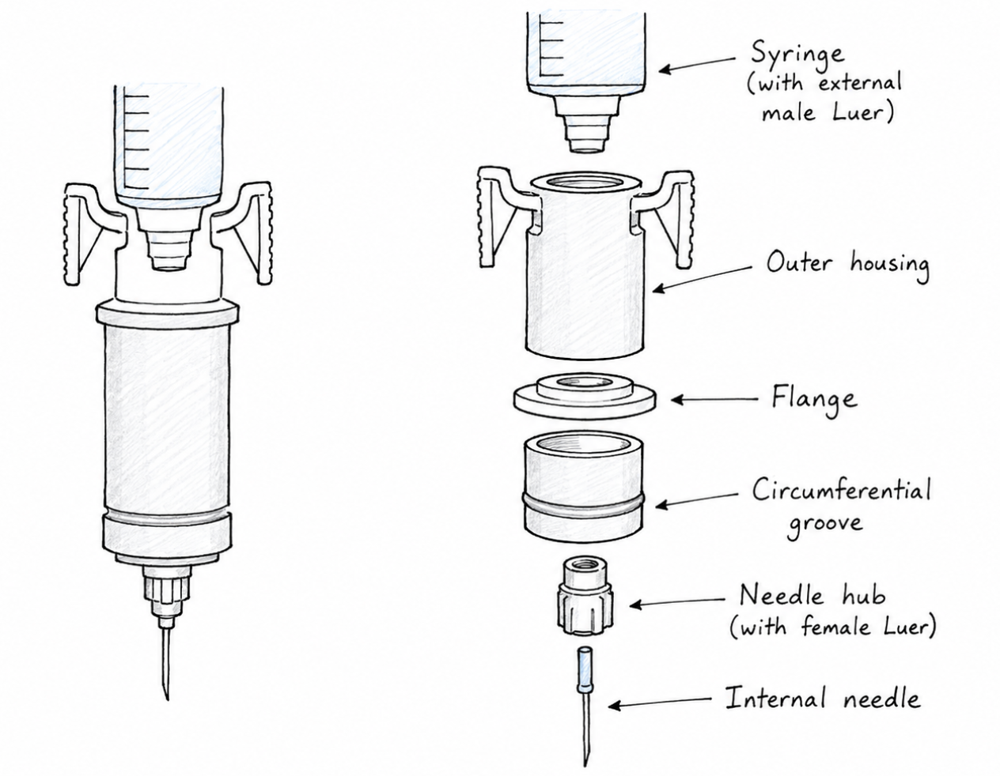
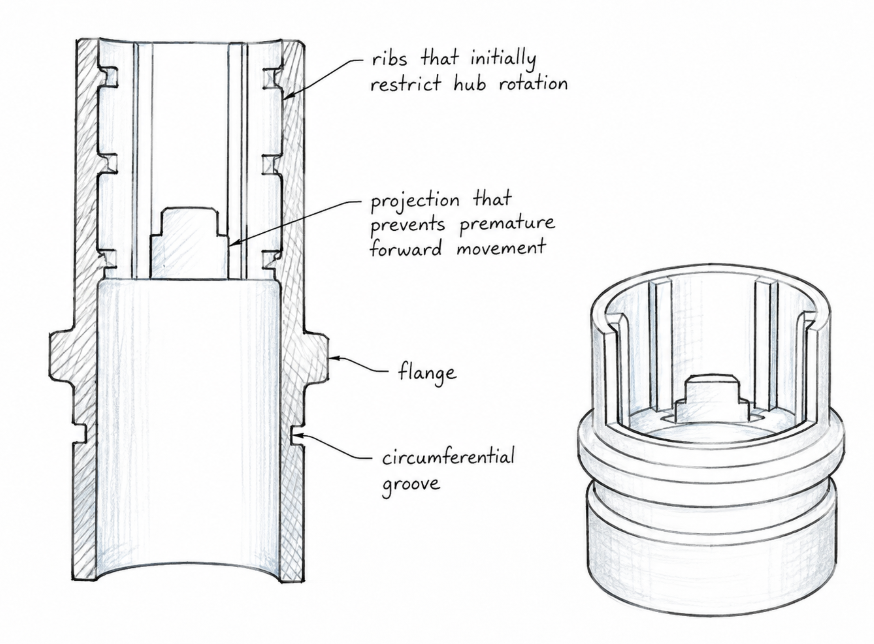
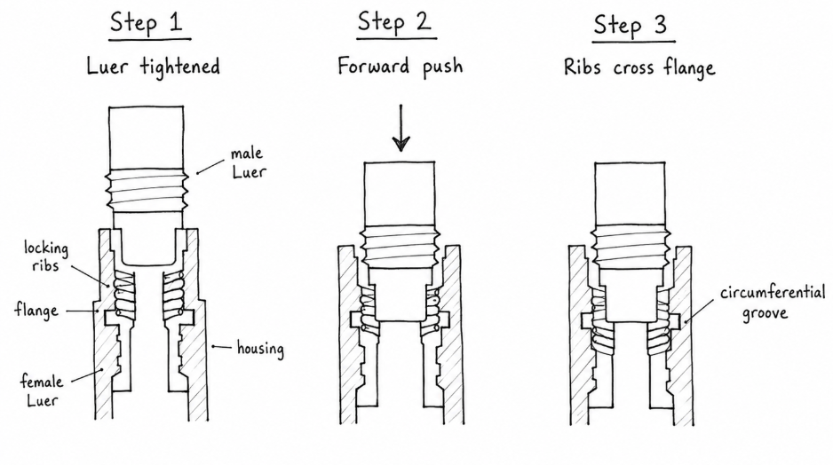
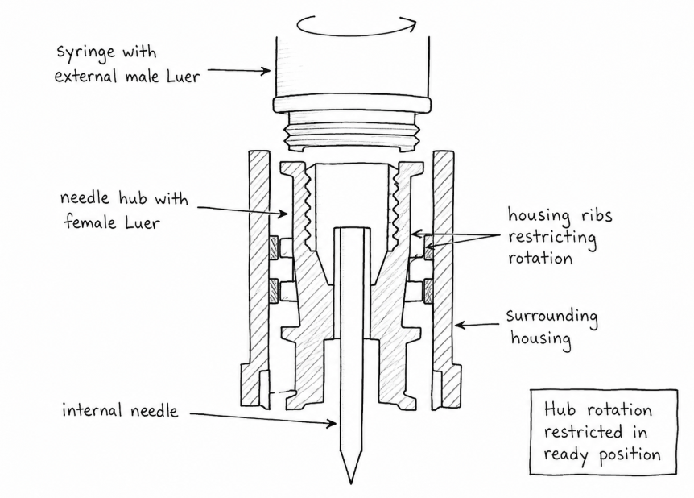
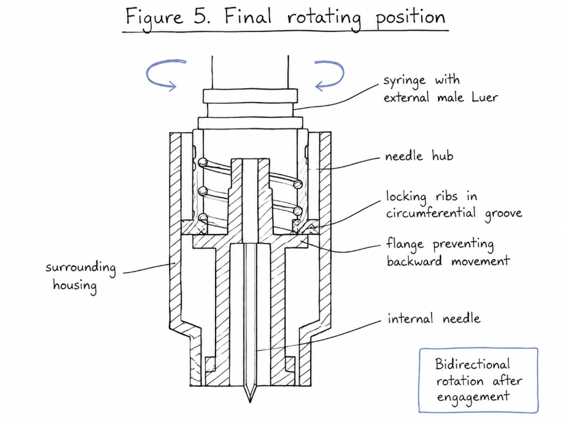
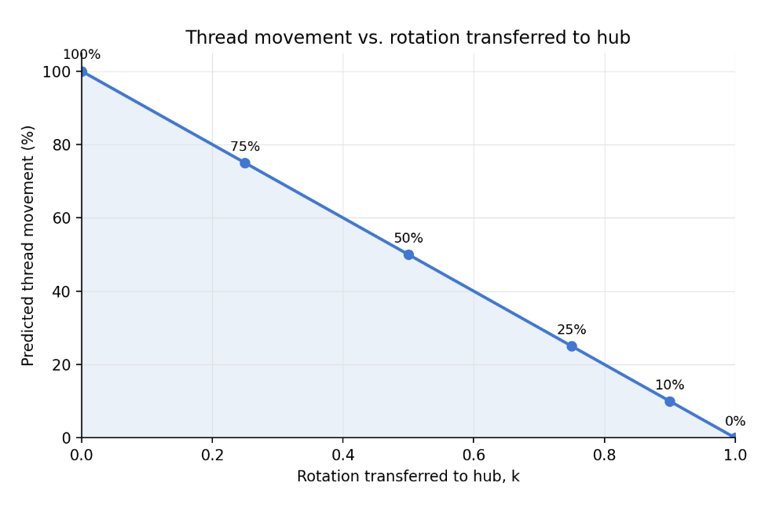
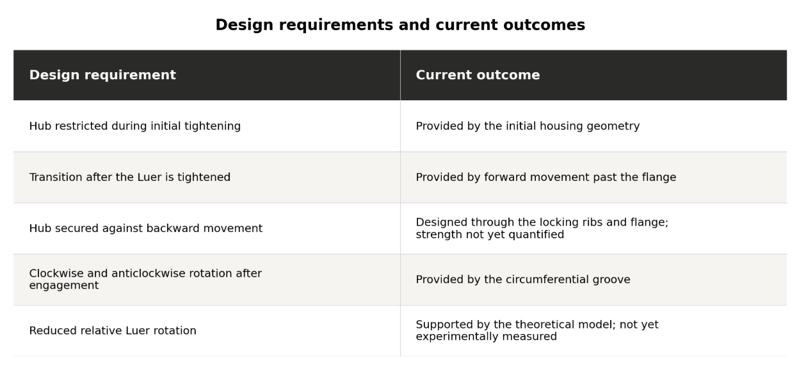

Anti-disconnection lock for CSTDs
A two-state, torque-responsive locking mechanism for closed-system transfer devices, designed so chemotherapy syringes can't accidentally unscrew in a nurse's hands.
- Role
- Independent researcher
- Mentor
- Dr. Sergio Bertoglio, Genova
- Tools
- Creo · analytical modelling · 3D printing
- Outcome
- Paper published · S.-T. Yau Award semifinalist (Physics) · International Academic Research Competition finalist


Why CSTDs are needed
This began when my aunt went through chemotherapy. Reading about her treatment, I learned something I'd never thought about. Antineoplastic (anti-cancer) drugs are designed to damage cells, and they don't distinguish between a patient's cells and a nurse's or pharmacist's. Staff who prepare and give these drugs every day can be exposed through skin contact, spills and inhaled vapour or aerosol.
I interviewed oncology nurses and studied NIOSH guidance on hazardous drugs. Exposure doesn't stop at the hospital: residue on skin and clothing can reach staff families too. When guidelines are ignored or equipment is cut to save money, that risk grows.
Closed-system transfer devices (CSTDs) exist to stop this. They keep the drug inside a sealed pathway as it moves from vial to syringe to IV bag, and keep contaminants out. But they don't all perform equally. In one comparative study, one CSTD left no detectable gemcitabine, while another had contamination in 9–23% of samples after compounding (Piccardo et al., 2021).
Why unscrewing is a problem
A CSTD is only closed while every connection holds. The syringe attaches to its adaptor with a threaded Luer lock, and in routine handling the syringe gets turned and twisted again and again while the plunger is pushed and pulled under pressure.
If the syringe turns the wrong way relative to its adaptor, the thread can unscrew by itself. Even a partial loosening creates a microscopic gap. Small pressure changes during injection or withdrawal can then push liquid, vapour or aerosol out through it, or pull outside air in. At the moment it happens, the drug escapes right where the nurse's hands are.
My analysis identified three leak conditions: positive pressure during injection, negative pressure during withdrawal, and slight misalignment where the connector meets the valve. Being "sealed" isn't enough. When the seal forms and how firmly the connection is held both matter.
How can a syringe stay locked to its adaptor and still rotate the way it needs to during normal handling?
With Dr. Sergio Bertoglio in Genova, I studied existing CSTD mechanisms, patents and research on torque transmission, friction, thread mechanics and axial retention to answer that question.
The two-state mechanism
I designed the mechanism in Creo. It has a spring-loaded needle hub, locking ribs and a circumferential groove.


- ReadyRibs in the housing stop the hub from spinning, so the syringe can be tightened properly.
- EngagedOnce the locking ribs sit in the groove, the hub is held axially but rotates freely in both directions.
- Reverse twistThe hub and syringe now turn together instead of unscrewing at the thread.


Torque model
I modelled relative angular displacement and torque transmission. If a fraction k of the syringe's rotation passes to the hub, the threaded interface only experiences the remainder, 1 − k. The more freely the hub turns with the syringe, the less the connection can loosen.

I also analysed the axial forces on the locking features, and how friction and manufacturing tolerances could change performance.
Current status
The 3D-printed prototype confirms the mechanism is physically feasible. The broader design also separates the liquid and air pathways, drawing on carbon-filter approaches used in air-cleaning CSTDs. The paper has been published and reached the S.-T. Yau High School Science Award semifinals in Physics.

This is an early mechanical proof of concept. It still needs experimental testing to measure resistance to disconnection and suitability for clinical use.
Reflection
The hardest part was learning to justify every decision: why this groove, this rib, this clearance. What started as worry about my aunt became a much wider look at device safety, and at how a tiny mechanical detail can matter to the people who depend on it.